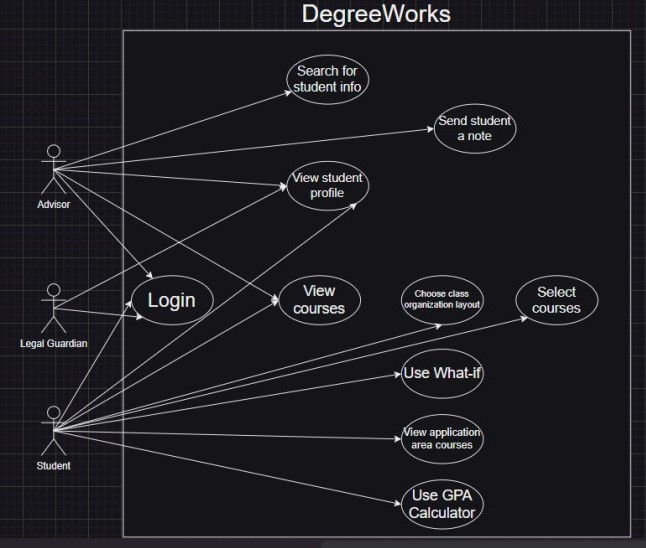
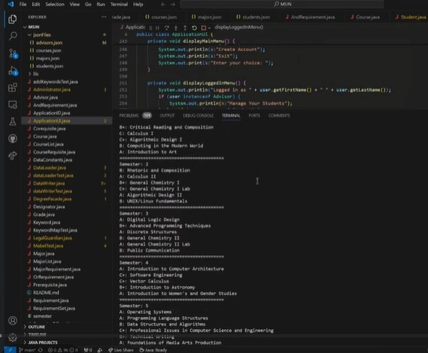
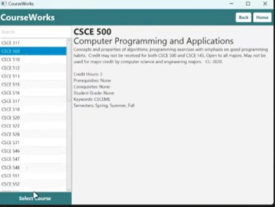

CSCE 247: Software Engineering
Stacey Allen Jefferson Jr.
CSCE 247 is a class instructed by Portia Plante with the mission of teaching students the process of being a software engineer. This included learning different design patterns, understanding the software development cycle, and utilizing SCRUM. For the semester project, my team was tasked with developing a fully functional DegreeWorks program with the overall goal of being user-friendly and allowing students to monitor their degree progress. This project required my team to put in our best effort and go through the various steps of the software development cycle while also satisfying our stakeholders.
Requirements
This document introduces the purpose and requirements of the DegreeWorks Application. Additionally, it also contains the constraints, potential stakeholders, and a competitive.
Design Documents

This document goes over the backend design of the application. These includes breaking down each key feature of the app and showing how it contributes to the facade degree works program, mock up json files for data storage, and scenarios for distinct users.
UML Diagram

A document containing the facade design pattern we are implementing into our DegreeWorks program.
Sprint 1 Video
This is a video presentation that showcases our program working through assigned scenarios and discuss the codes relation to our UML diagram.
Sprint 2 Video
This is a presentation of the final interation of the program, now accompanied with a GUI.